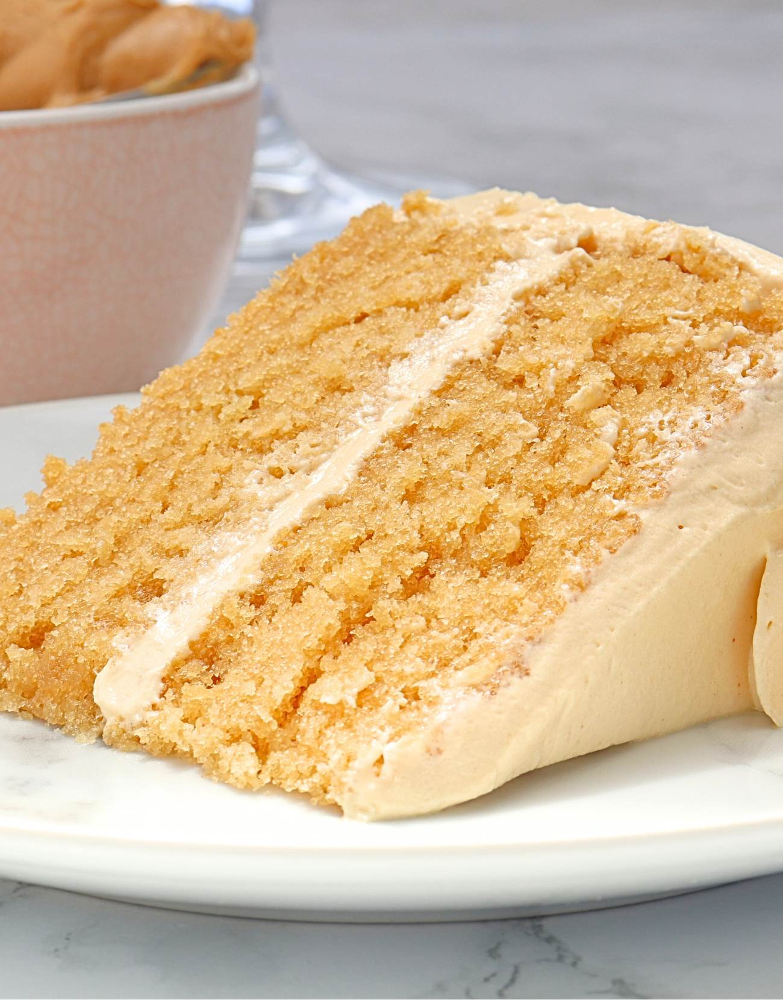

Peanut Butter Cake
Return Home

Cake Ingredients
- 1/2 cup Creamy Peanut Butter
- 1/2 cup Softened Butter
- 4 Eggs
- 1 pack Butter Cake Mix
- 2/3 cup Water
Cake Instructions
- Preheat oven to 325degrees.
- Grease bottom of two 9in round cake pans.
- Cream peanut butter and butter until fluffy.
- Add eggs one at a time, mixing well with each.
- Alternately add sifted cake mix and water.
- Stir until just combined.
- Pour into pans and bake for 25 min.
- Allow to cool for 10 min before turning out onto cooling rack.
- Frost with peanut butter frosting.
Frosting Ingredients
- 1/2 cup Softened Butter
- 1 cup Peanut Butter
- 3 tbsp Milk (as needed)
- 2 cups Powdered Sugar (sifted)
Frosting Instructions
- Beat butter and peanut butter well.
- Add sugar.
- Add 1 tbsp milk at a time as frosting begins to thicken.
- Beat for at least 3 min or until fluffy.
Return Home